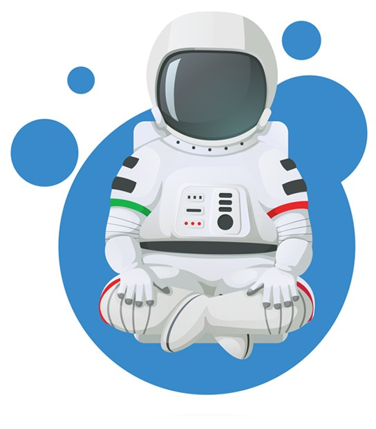

Your effort today is a testament to your discipline and desire to live life on your terms. Your success today stems from your ability to invoke the feeling of joy or gratitude, the feeling you'd have once you were successful in accomplishing this goal.
As we get set to move yourself another step closer to achieving your goal of your goal, as we begin to get ourselves in the ideal state of mind, take a moment to identify the memory that you'll recall to get you in the emotional state of joy or gratitude.
